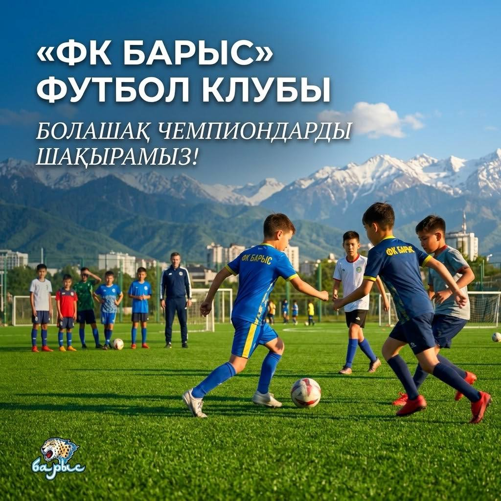

2012–2019-20 жылдары туылған балаларды жаттығуға шақырамыз. Апталық жаттығулар, сезондық активті матчтар, толық жабдықталған стадион мен футзал.

Клуб әр баланың деңгейіне сай жаттығу процесін ұсынады және сезон бойы турнирлерге, достық матчтарға белсенді қатысады.
Жаттығуларға арналған толық жабдықталған стадион, футзал және қажетті барлық инвентарь.
Сезон барысында клуб командалары аймақтық және жергілікті турнирлерде тұрақты өнер көрсетеді.
2012 жылдан бастап 2019–2020 жылы туылған балаларға дейін — әр жас тобына жеке жаттығу бағдарламасы.